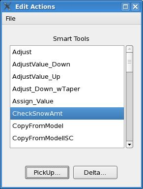

Smart Tools and
Procedures Training Guide
Contents
Edit Actions
Smart Tools
Procedures
Utilities
Answers to Exercises
Appendix -- Point-based Tools
Edit Actions
Edit Actions are operators that can modify many grids in a single
operation,
thus potentially saving you time. The GFE has two kinds of Edit
Actions:
Smart Tools: bits of code which perform
operations on a
grid-by-grid
basis. Smart Tools are written in a language called, Python.
Procedures: bits of code which can perform operations on many
grids and
may call Smart Tools and other useful commands which can create,
interpolate,
and delete grids.
The combination of Smart Tools and Procedures is very powerful.
However,
be careful. It's easy to unintentionally modify grids, too. The next
section
describes how you control which grids get modified.
Before you actually execute an Edit Action you must
first
indicate the grids that you wish to modify. There are two ways to
indicate
which grid(s) you wish to edit. One uses the Spatial Editor Time and
the
other uses the Selected Time Range in the Grid Manager.
Using the Spatial Editor Time to Identify Editable Grids
If you want to edit a single grid, the simplest way
is
to MB1 press over that grid in the Grid Manager. This will make the
grid
"Editable" and set the Time Range to that of the grid. To edit your
selected
grid using the Edit Actions, follow the steps below. The grid you wish
to modify should now be displayed in the Spatial Editor and the label
for
that grid should start with the word "(edit)".
- Make any grid you choose editable by moving the cursor over
that grid in
the Grid Manager pressing MB1. Alternatively, you can MB2 click on the
Spatial Editor label that corresponds to that grid.
- In the Spatial Editor, pick the Select Points tool and create
an edit area on the display.
- On the button bar, MB1-click on the button that looks like
the icon to
the right. A list dialog will appear
 looking similar the figure below containing items such as SetValue,
AdjustValue_Up,
AdjustValue_Down, and Smooth.
looking similar the figure below containing items such as SetValue,
AdjustValue_Up,
AdjustValue_Down, and Smooth.
- MB1 press and hold on the AdjustValue_Up entry. Look at the
corresponding
grid in the Grid Manager. Note that the color of this grid has changed,
indicating which grid is about to be modified.
- Now release MB1 and watch your selected area change in value.
- For more practice, select a different edit area and operate
on the
gridded
data using different edit actions.

Once you have selected an edit area, you can execute any of these Smart
Tools in any order. (Sometimes the Edit Actions Dialog appears in
an inconvenient location such as on top of the data you wish to edit.
The
Edit Actions Dialog is easily moved by pressing
MB1 on the menu and dragging the menu to a more desirable location.
Moving
the cursor over the title bar of this menu and MB1 dragging will move
this
dialog as well.)
When a grid is "Editable", the Smart Tools that apply
to it will appear in the Edit Actions Dialog. If no grid is
editable,
all tools will appear. However, to execute a tool, the Weather Element
to be modified by it, MUST be "Editable". The tools that apply to
the "Editable" Weather Element also appear and can be executed from the
MB3 pop-up menu over the Spatial Editor. In addition, keyboard
shortcuts can be set up for Smart Tools and Procedures (
see
gfeConfig Keyboard Shortcuts).
Using the Selected Time Range to Identify Editable Grids
Since editing one grid at a time would be too
cumbersome,
the GFE allows you to edit many grids at once. However, this powerful
capability
must be used with great care or you could modify grids unintentionally.
To learn how to modify many grids at once, follow the steps below.
- Make the Weather Element you wish to modify "Editable" as
described
above.
- In the Grid Manager, select a time range that spans across as
many
grids
for the weather element that you wish to modify. To accomplish this,
press
and drag MB1 in the Time Scale or the weather element data pane.
- Now that you've identified the grids you wish to edit, press
and hold
MB1
on either the SetValue, AdjustUp(Down), or the Smooth edit actions.
- While holding down MB1, look at the Grid Manager and notice
that the
grids
that you previously selected have changed color, indicating that those
grids are about to be modified.
- Release MB1 and a warning message will appear.
- Click Yes and watch the data change as defined by the edit
action that
you chose.
Examine all of the grids that you modified until you
convince yourself that you did modify all the grids that you intended.
Procedures may also depend upon the Spatial Editor time and Selected
Time Range. However, they have the capability of internally defining
the grids and time range upon which they operate.
In summary, the Grid Manager's selected time range is used to indicate
which grids will be modified by a Smart Tool. If no selected time range
is defined, the Spatial Editor time is used. Pressing MB1 over a Smart
Tool is the best way to know which grids will be edited before the
operation
is executed. If you decide NOT to perform the edit, simply move the
mouse
off the Smart Tool before releasing MB1.
The list of Smart Tools may include items that are
defined
at the local site. These Smart Tools can use previously defined fields
to modify new fields. Algorithms that incorporate the local terrain can
be included as well. This paradigm allows for extensibility so that the
local office can create their own tools customized for their office.
Edit Action Warnings
There are two types of warnings you might see when
performing
Edit Actions: Empty Edit Area Warning and Time Range Warning. These can
both be turned on or off from the Main Menu or from the Warning itself.
The Time Range Warning cautions you that multiple grids will be
modified
and will not appear if only one grid will be affected. Also, if the
user
is performing the same Edit Action (same weather element, tool or
procedure,
time range, and edit area), no warnings will appear. This way someone
can
smooth or adjust repeatedly without the warnings. The pickup value is
not
checked, so one can also perform Assign_Value repeatedly and change the
pickup value in between without getting a warning message.